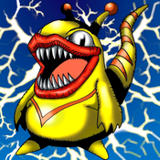

Kaminarikozou

STATS
ATK: 700
DEF: 600DECK COST
Deck Cost per Card: 13Fusion List (43 Possible Fusions)
- Kaminarikozou + Air Marmot of Nefariousness = Tripwire Beast
- Kaminarikozou + Aqua Snake = Bolt Escargot
- Kaminarikozou + B. Dragon Jungle King = Twin-Headed Thunder Dragon
- Kaminarikozou + Baby Dragon = Thunder Dragon
- Kaminarikozou + Blackland Fire Dragon = Thunder Dragon
- Kaminarikozou + Boo Koo = The Immortal of Thunder
- Kaminarikozou + Crawling Dragon #2 = Twin-Headed Thunder Dragon
- Kaminarikozou + Crawling Dragon = Twin-Headed Thunder Dragon
- Kaminarikozou + Curse of Dragon = Twin-Headed Thunder Dragon
- Kaminarikozou + Curtain of the Dark Ones = The Immortal of Thunder
- Kaminarikozou + Darkfire Dragon = Thunder Dragon
- Kaminarikozou + Dragon Zombie = Twin-Headed Thunder Dragon
- Kaminarikozou + Fairy Dragon = Thunder Dragon
- Kaminarikozou + Gaia the Dragon Champion = Twin-Headed Thunder Dragon
- Kaminarikozou + Kairyu-Shin = Twin-Headed Thunder Dragon
- Kaminarikozou + Kaiser Dragon = Twin-Headed Thunder Dragon
- Kaminarikozou + Kamionwizard = The Immortal of Thunder
- Kaminarikozou + Koumori Dragon = Thunder Dragon
- Kaminarikozou + Lesser Dragon = Thunder Dragon
- Kaminarikozou + Little Chimera = Tripwire Beast
- Kaminarikozou + Magician of Faith = The Immortal of Thunder
- Kaminarikozou + Metal Dragon = Twin-Headed Thunder Dragon
- Kaminarikozou + Meteor Dragon = Twin-Headed Thunder Dragon
- Kaminarikozou + Milus Radiant = Tripwire Beast
- Kaminarikozou + Mystic Lamp = The Immortal of Thunder
- Kaminarikozou + Mystical Sheep #1 = Tripwire Beast
- Kaminarikozou + Mystical Sheep #2 = Tripwire Beast
- Kaminarikozou + Ooguchi = Bolt Escargot
- Kaminarikozou + Parrot Dragon = Twin-Headed Thunder Dragon
- Kaminarikozou + Petit Dragon = Thunder Dragon
- Kaminarikozou + Phantom Dewan = The Immortal of Thunder
- Kaminarikozou + Red-Eyes B. Dragon = Twin-Headed Thunder Dragon
- Kaminarikozou + Sea King Dragon = Twin-Headed Thunder Dragon
- Kaminarikozou + Seiyaryu = Twin-Headed Thunder Dragon
- Kaminarikozou + Sorcerer of the Doomed = The Immortal of Thunder
- Kaminarikozou + Spike Seadra = Twin-Headed Thunder Dragon
- Kaminarikozou + Star Boy = Bolt Escargot
- Kaminarikozou + Stone D. = Twin-Headed Thunder Dragon
- Kaminarikozou + Sword Arm of Dragon = Twin-Headed Thunder Dragon
- Kaminarikozou + The Furious Sea King = Bolt Escargot
- Kaminarikozou + Thousand Dragon = Twin-Headed Thunder Dragon
- Kaminarikozou + Time Wizard = The Immortal of Thunder
- Kaminarikozou + Yamatano Dragon Scroll = Thunder Dragon